Summary and involvement
Because this type of game can place many enemies on a phone screen at once, I needed the characters and enemies to stay readable at a small size. I focused on clear shapes, recognisable colours and animation that still worked when several sprites overlapped.
What I made
- Playable characters and their animation
- The enemy roster and every tier variant of it
- The skill icon set
The interface itself was a team effort; what is mine inside it are the icons and every sprite on screen.
How the roster reads
The characters have different health, movement speed and starting skills. Dogge is a balanced melee character, Ninetail uses damaging orbs, and Laserbun has very low health but high speed and a piercing beam.
The constraint that shaped it
A detailed enemy may look good by itself but become difficult to read inside a crowd. I kept the shapes and palettes clear so players could still identify an enemy while moving and watching the rest of the screen.
In the game
{kind=link}
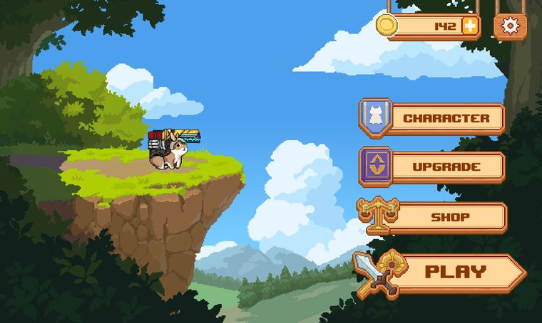
Main menu
Laserbun shown standing in the world rather than on a flat plate. Character art mine, screen built by the team.
{kind=link}
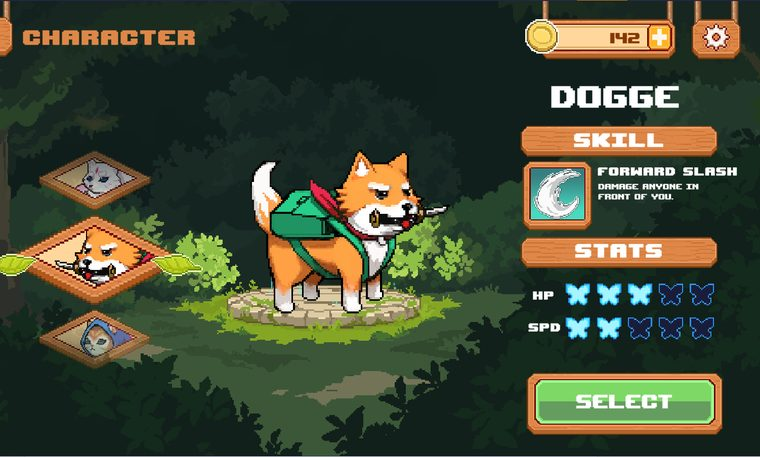
Character select
Where the roster is read side by side. Dogge, the portraits and the skill icon are mine; the layout is the team’s.
{kind=link}
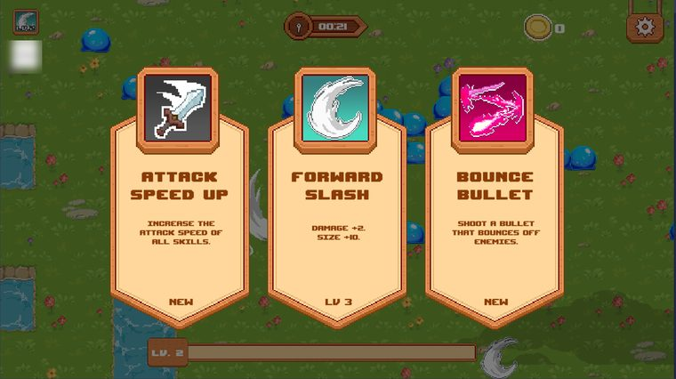
Level-up draft
The player chooses from three upgrades during a run. I designed the skill icons to stay clear at this small size and be recognised quickly.
{kind=link}
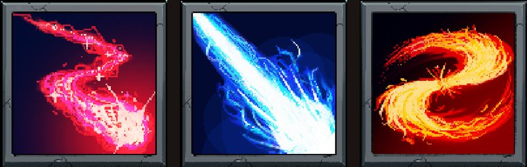
Skill icon set
One icon per ability, each keyed to its own colour so a skill is identifiable mid-swarm.
Pixel art
Every character and enemy is a hand-animated sprite sheet. These are running at their authored frame rates.
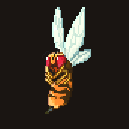
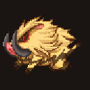
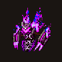
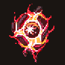
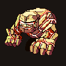
Enemy variants
The game needed several enemy tiers, but making a completely new animation set for every tier would have taken too long. I created enemy families that could support recolours and small design changes, then used a larger redesign when an enemy needed to feel clearly different.
Slime · eight variants
The basic tiers use different colours. The elite version has a crown because changing the silhouette makes it easier to notice than another recolour would.
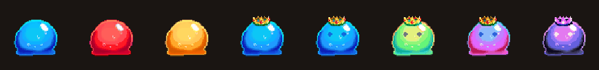
Elemental · six variants
These six enemies use the same basic body with different elemental palettes and effects. This keeps them related while still giving each variant its own identity.
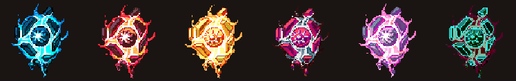
Golem · three variants
The golem uses a longer nine-frame cycle. I slowed the movement and gave the body more rise and fall so it would feel heavier than the smaller enemies.
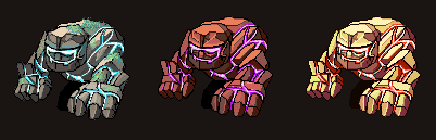
Bee · three recolours
These three tiers share one animation sheet and use different palettes. They did not need separate animations because they were still meant to behave like the same enemy.
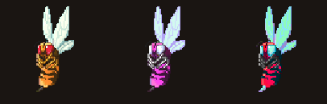
Boar · four recolours and a horn change
The stronger versions change the horns as well as the colour. The head is the clearest part of a charging boar, so that is where I placed the extra detail.
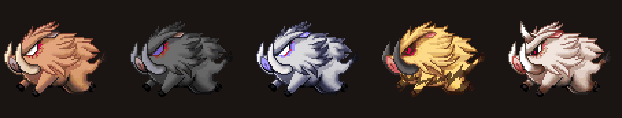
Specter · the bee redesign, then recoloured again
This started as a redesign of the bee when a recolour was no longer enough. I changed the body, wings and animation so it read as a new enemy, then made additional colour variants from it.
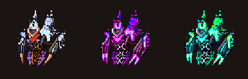